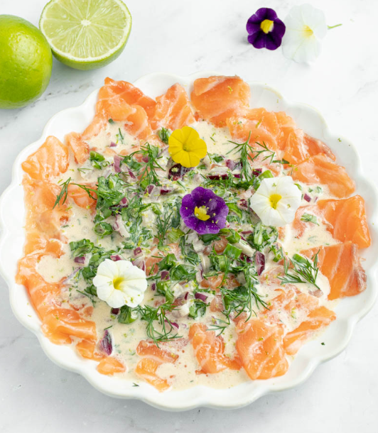

Salmon crudo - Thai style

Salmon crudo is a fancy way to prepare raw salmon with a tasty sauce. In this recipe we will use ingridients popular in Thailand to merge subtle italian preparation with a punch from Asian spices and sauces
I have only prepared this once and have eaten it twice. But the taste of this recipe haunts me so I definitely recommend you to try this.
Ingredients
- 200 g of good quality salmon
- 150 ml of coconut milk
- Some fresh coriander
- Some fresh chive
- Couple of spoons of soy sauce
- Spoon of fish sauce
- Spoon of brown sugar syrup
- Any spicy pepper
- Red onion
- Half of lemon
- Tea spoon of salt
- Rea spoon of chilli flakes
Steps
- Cut half of red onion and marinate it with salt, chilli flakes and lemon
- In a blender, blend all remaining ingridients exceot salmon
- Taste the coconut sauce and add any spices if needed
- Put the sauce in the fridge
- Prepare the salmon: cut it in thin slices
- Pour the sauce to the plate, add salmon and top it with marinated onion